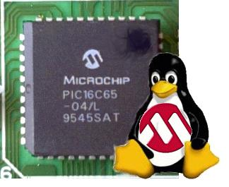

|
Artículo 5: Herramientas hardware y software para el desarrollo de aplicaciones con Microcontroladores PIC bajo plataformas GNU/Linux |

Juan González,
Andrés
Prieto-Moreno, "Herramientas
hardware y software para el desarrollo de aplicaciones con
Microcontroladores PIC bajo plataformas GNU/Linux", III
Jornadas de Software Libre, Universidad Pontificia de Salamanca en
Madrid. Mayo 2004.
Los microcontroladores PIC
están muy extendidos. Microchip, la empresa que los fabrica y
distribuye, sólo ofrece herramientas de desarrollos para
plataformas Windows. En este artículo describimos algunas de
las herramientas libres que nos permiten trabajar con ellos desde
GNU/Linux y presentamos la arquitectura del grabador que hemos
desarrollado, así como el software creado para realizar la
descarga. Toda la información está publicada en la
web. Se pueden encontrar todos los detalles en los enlaces que se
indican.
|
Transparencias de la presentación: [PDF] [OpenOffice] |
Se condecen permisos para usar, modificar y/o distribuir este artículo, siempre que se mantenga esta nota.
|
Documentos para descargar |
|
piclinux.pdf (185KB) |
Artículo en formato PDF |
|
pic-linux.tgz (280KB) |
Fuentes del artículo para Lyx y dibujos para Xfig |
|
pres-pic-linux.pdf (849KB) |
Presentación en formato PDF |
|
pres-pic-linux.sxi (1.4MB) |
Presentación en OpenOffice |
Todas las referencias de este artículo están disponibles aquí
Tarjetas PICMIN y PICUPSAM. Entrenadoras mínimas para el PIC.
Cuaderno técnico 4: Grabación de microcontroladores PIC
Servidor PICP. Stargate de grabación de PICs
Skypic-down. Cliente para la grabación de PICs desde Linux